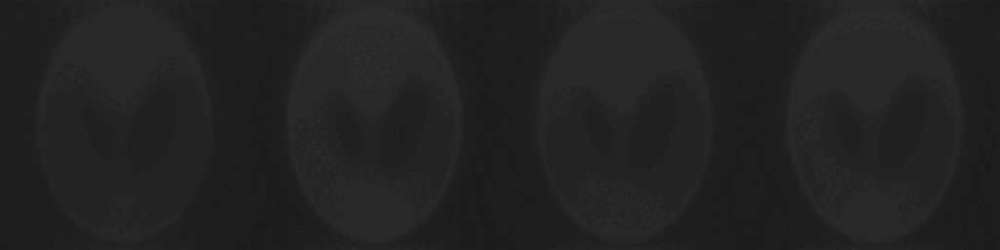

Technical Projects
computer graphics / GPGPU / neural rendering
A collection of projects showcasing my work in computer graphics, GPGPU programming, and neural rendering.
013D Gaussian Splatting Level-of-Detail
| Year | 2024 |
|---|---|
| Type | Master's thesis — UPC BarcelonaTech / NII Tokyo |
| Links | [github] [read thesis] |
Generating dynamic LoD structures to accelerate 3DGS model rendering.
This project constitutes my master's thesis for the MSc in Innovation and Research in Informatics, Computer Graphics, and Virtual Reality specialization at UPC BarcelonaTech. It was developed during a research stay at the National Institute of Informatics, Tokyo, under the supervision of Prof. Akihiro Sugimoto.
The main purpose was to develop a method to accelerate the rendering of 3D Gaussian Splatting models on lower-powered hardware. The method only takes as input the pretrained model and generates the LoDs using only the information in the scene at load time.
Key achievements
- 14-33% reduction in frame time
- ~50% reduction in primitive count
- Image quality above 31 dB PSNR
- No additional training required
02CUDA Ray Tracing in a Weekend
| Year | 2024 |
|---|---|
| Type | CUDA / C++ / OpenGL |
| Links | [github] |
A C++/CUDA implementation following the "Ray Tracing in a Weekend" book with real-time visualization capabilities.
My implementation computes the light path using CUDA kernels and displays the result continuously using the OpenGL-CUDA interoperability interface.
Features
- Diffuse materials
- Metallic materials with fuzz
- Grid-structured MSAA
- Real-time OpenGL display
- CUDA-OpenGL interoperability
03NeRF CT Scan Reconstruction
| Year | 2025 |
|---|---|
| Type | Neural rendering / tomography |
| Links | [github] |

Exploring CT reconstruction using NeRF models for density estimation.
Following my previous experience on 3D reconstruction, I was interested in trying neural methods for representing a density field, such that the scene could be encoded by the model.
I used astra-toolbox to generate the scanning setup positions and compute
the forward projections for the sinogram. Then I implemented a basic NeRF model which
first learns the scene from the given sinogram.
Techniques used
- Neural hash grids for faster training
- TV regularization for noise removal
- Structured sampling for density field evaluation
- Comparison with algebraic iterative algorithms